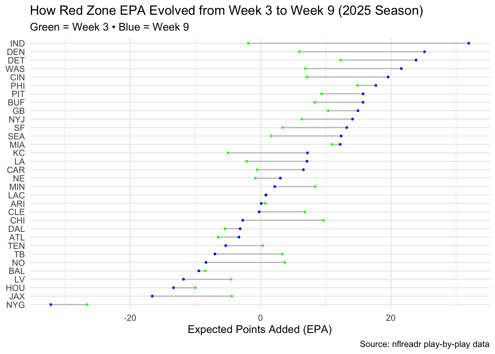

At the start of the season, Miami was off to a strong red zone start, scoring nearly 9 expected points over just 20 plays. By the end of the season, they had many more opportunities but managed only about 12.7 expected points, showing their efficiency in the red zone slowed as the season went on.
ESPN made me curious about Miami so now lets take a look throughout the league as a whole in 2025.
Warning: Using the `size` aesthetic with geom_segment was deprecated in ggplot2 3.4.0.
ℹ Please use the `linewidth` aesthetic instead.

The Colts stood out to me not only having the highest EPA through week 9 but how much they have grown from week 3. They started the season with 44 redzone plays but were expected to waste their opportunities with an epa of -1.87 ranking 23rd in the league. Now through week 9 they sit at the top of the chart with 112 redzone plays and an epa about 6 points higher than the second best in the league. They’re play-making ability has easily seen the most growth in the last 6 weeks of football. Denver also shot to the top of the rankings sitting second with only 84 redzone plays but an epa of 25.17. While they didn’t start off as bad ranking 13th week 3, their epa still grew by almost 14 points.
On the other end of the spectrum, the Chicago Bears had a six weeks from a not so great place. Week 3 their epa ranked 5th with 9.68 points expected. The Bears have fallen to 22nd in week 9, down 11 points from where they sat week 3. The Bears seem to be finding themselves in the redzone more oftem but despite the experience within 20 yards, they aren’t always able to capitalize. New Orleans shared a similar fate with week 3’s total epa at 3.73 and now -8.37 through week 9.
Baltimore, Dallas, and Arizona are the three unfortunate musketeers who haven’t seemed to have been able to get it right all season. The Ravens are the lowest of the three but each team has struggled to see much progress in their ability to capitalize in the redzone. Though small, the Cowboys have seen slight improvement throughout the last 6 weeks while both the Cardinals and Ravens are worse off.
Now how did I get all that?
I first filtered the 2025 play-by-play data to include only red zone plays which I defined as plays that were on 20 yards from the goaline or closer that were either runs or passes. I then created two summary tables: one for Weeks 1–3 (nflredzoneweek3) and one for the full season through Week 9 (nflredzone25), calculating the total number of red zone plays and total EPA for each team. After that, I joined the two tables by team to create redzone_comparison, which allowed me to compare Week 3 and Week 9 performance side by side. Finally, I used this joined dataframe to create a dumbbell chart, highlighting Week 3 EPA in green and Week 9 EPA in blue, with teams ordered by their Week 9 EPA to visualize changes in red zone efficiency over the season.